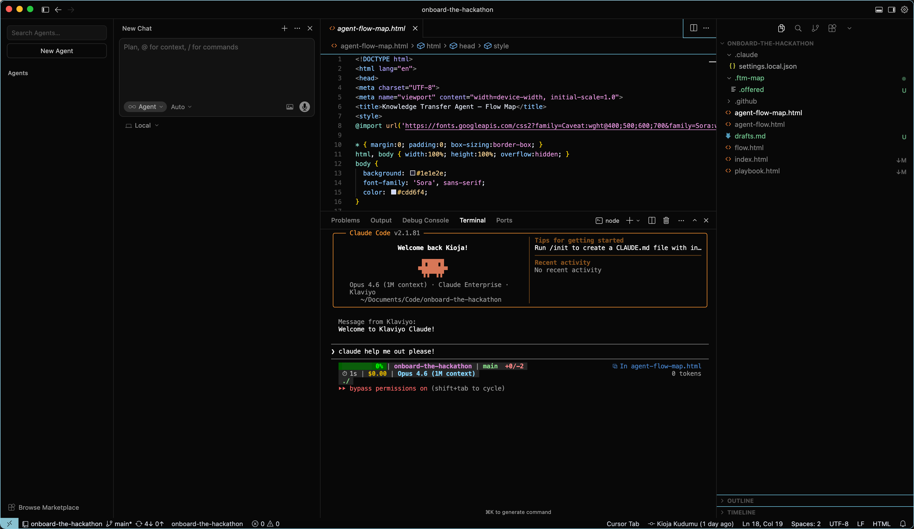
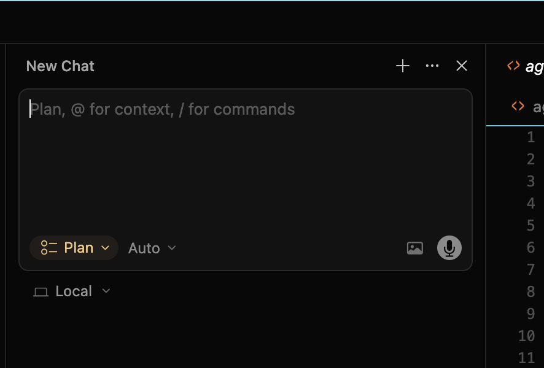
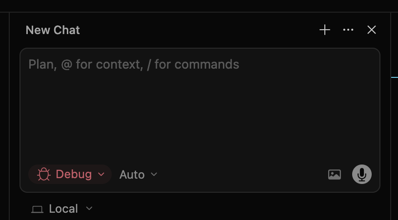
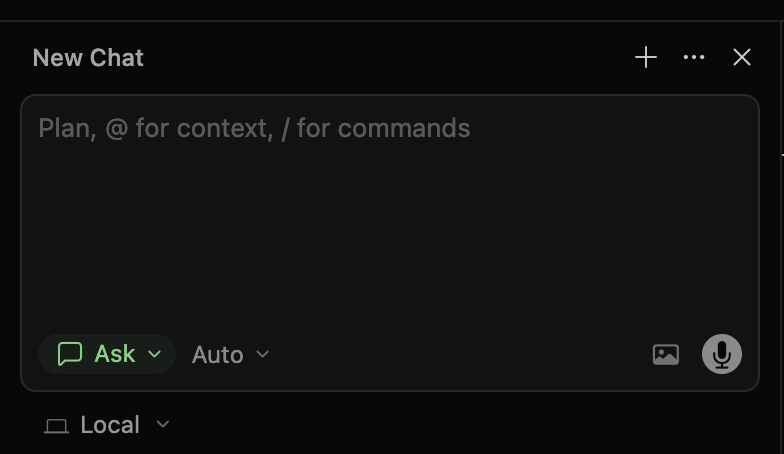

The real goal here isn't just the hackathon project. Yes, we're building a Knowledge Transfer Agent and it's going to be great. But the deeper goal is this: if even one person on this team walks away knowing how to use AI to do work they didn't think they could do — that's a win bigger than any demo.
You don't need to be technical. You don't need to know how to code. The whole point is that AI bridges that gap now. This guide is designed so that the only things you do manually are request access and understand what you're looking at — every technical step is handled by your AI coding agent. I want y'all to have that Tony Stark / JARVIS experience — or at least 50% of the way there by the time we're done. If something feels unfamiliar or intimidating, that's exactly where the learning happens. Lean into it.
Do This Now
These are the only things you need to do manually. Everything else in this guide is handled by your AI agent.
- Request GitHub access — Freshservice catalog. Select Member access to GitHub-Klaviyo org. Create a GitHub account with your Klaviyo email first at github.com/join if you don't have one.
- Request Cursor access — Freshservice catalog. Instant approval.
- Download and install Cursor — cursor.com
- (Optional) Request Claude Code access — Freshservice catalog. Select Premium from the role dropdown. Requires manager/IT approval. Cursor alone is enough if you don't get it in time.
Your First 15 Minutes
Here's exactly what to do when you sit down Wednesday morning after the team brief.
1 Open Cursor
Launch Cursor. Press Cmd+L to open the AI chat panel. Make sure it says "Agent" and "Auto" at the bottom.

2 Install dependencies
Paste this into the AI chat:
3 Clone the project
Kioja will share the exact GitHub URL in Slack Wednesday morning. Just paste it where it says [Kioja will share this].
4 Open the project in Cursor
Go to File > Open Folder and select the folder you just cloned.
5 Create your branch
6 Start building
Open the AI chat and start describing what you want. Look at your role card in the Playbook for the "START HERE" section — that's your first task. Tell the AI to commit after each change and push before breaks.
That's it. You're up and running. Scroll down for details on Cursor, Git, and troubleshooting prompts — but you don't need to read them all now. Come back when you need them.
Cursor details · Claude Code (optional) · Git reference · Troubleshooting · AI tips (in playbook)
Getting Started with Cursor
Cursor is the main tool most of you will use. It looks like a code editor, but the magic is the AI chat panel — you describe what you want in English and it writes the code for you.
1 Open Cursor
Launch Cursor after installing it. It'll look like a code editor with a sidebar on the left showing files and folders.
2 Open the project folder
Once Kioja shares the GitHub link Wednesday morning, you'll need to open the project. Go to File > Open Folder and navigate to wherever you cloned the project (we'll cover cloning in the next section).
3 Use the AI chat
Press Cmd+L to open the AI chat panel. This is where you talk to the AI. Make sure it says "Agent" and "Auto" at the bottom of the chat panel (see the arrow below). That's the mode you want — it lets the AI make changes to your files directly.
Here's what you're looking at:
- Left panel — the AI chat. Type what you want here. Agent mode + Auto is set at the bottom.
- Center — your code files. This is where you see what the AI writes.
- Bottom (Terminal tab) — Claude Code running in the terminal. A second AI you can talk to for bigger tasks.
- Right sidebar — your project files and folders.
4 Switch modes with Shift+Tab
See the mode label at the bottom-left of the chat panel? It starts on Agent (which is what you want most of the time). But you can press Shift+Tab to cycle through three other modes that are useful in different situations:



Plan mode — The AI thinks through your request and lays out a step-by-step plan before writing any code. Use this when you're about to start something big or you want to make sure the AI understands what you want before it goes off building. Great for the beginning of a task.
Debug mode — The AI focuses specifically on finding and fixing bugs. Use this when something is broken — paste the error message and let it investigate. It'll look through your code, find the problem, and fix it.
Ask mode — The AI just answers your question without changing any files. Use this when you want to understand something — "what does this file do?", "how does this work?", "explain this error to me." It won't touch your code, just explain.
The simple version: Start in Agent mode (the default). If you want the AI to think before building, hit Shift+Tab to switch to Plan. If something's broken, Shift+Tab to Debug. If you just have a question, Shift+Tab to Ask. You can always Shift+Tab back to Agent when you're ready to build again.
5 Set up Claude Code in the terminal (if you got access)
Cursor has a terminal built in at the bottom of the screen. Press Cmd+` (backtick key, above Tab) to toggle it.
If you got Claude Code access (Claude Premium), you can run it right inside Cursor's terminal. This gives you two AI tools at once — Cursor's chat for quick edits and visual stuff, and Claude Code in the terminal for bigger tasks that touch multiple files.
In the terminal, type:
The key thing to remember: Cursor is where you SEE the code and files. The AI chat panel (Cmd+L) is where you talk to Cursor's AI for quick edits. The terminal (Cmd+`) is where you run Claude Code for bigger tasks. You don't need both — either one works on its own. But together they're powerful.
Getting Started with Claude Code (Optional)
Claude Code is optional. Cursor's built-in AI (Agent mode) is all you need for the hackathon. Claude Code is a bonus tool for those who got Claude Premium access and want extra power. If you didn't get access or this section feels overwhelming, skip it entirely — you won't be at a disadvantage.
Claude Code is Anthropic's command-line AI tool. It runs in your terminal (the black window with text). It's powerful because it can read your entire project, make changes across multiple files, and run commands — all from a conversation.
1 Install Claude Code
Open the AI chat in Cursor (Cmd+L) and paste this prompt:
2 Navigate to the project folder
In your terminal, navigate to where you cloned the project. If you're not sure where it is, paste this prompt into Claude Code:
3 Start Claude Code
Once you're in the project folder, just type:
4 Planning mode
Before you ask Claude Code to build anything, hit Shift+Tab to enter planning mode. This makes the AI think through the approach and ask you questions before writing any code. It prevents the AI from going in the wrong direction.
You can use Cursor and Claude Code together. Use Cursor to SEE your files visually and make quick edits via the chat panel. Use Claude Code in the Cursor terminal for bigger tasks where you want the AI to work across multiple files at once.
Git in Plain English — What It Is, When to Prompt
You do not need to learn Git. You just need to understand 5 concepts so you know when to ask the AI to do something. Here they are:
Clone = Download the project
When: Wednesday morning, first thing (once)
Kioja will share the exact GitHub URL in Slack Wednesday morning. Just paste it where it says [Kioja will share this].
Branch = Your own workspace
When: Right after cloning, before you start building (once)
Commit = Save your progress
When: Every 30-60 minutes, or whenever something is working
Rule of thumb: If you just got something working and you think "nice, that works" — that's the moment to commit. Don't wait until everything is done.
Push = Upload your saves to the cloud
When: After a few commits, or before you take a break
Pull = Get the latest from the team
When: If Kioja says "I pushed updates" or "pull the latest"
Undo = Go back to the last save point
When: Something broke and you want to go back
Pull Request (PR) = "Hey, my work is ready"
When: You're done with your piece and it's ready for Kioja
When You're Stuck
Something broke and you don't know why
Copy and paste the exact error message. Don't describe it from memory — the specific text matters. Screenshots help too — drag and drop a screenshot right into the chat. A picture of the error is often better than trying to explain it.
You don't understand what the AI did
The AI seems to be going in circles
If the AI can't fix something in 3 tries, it's stuck in a loop. See tip #3 in the playbook.
You want to see what the app looks like
You want to install a package the AI told you about
You've been stuck for more than 15 minutes
Post in #hackathon-knowledge-transfer-agent. Seriously. There are no dumb questions, and someone on the team has probably hit the same thing. Kioja can usually unblock you in 5 minutes.
Clone = Download the project (once, at the start)
Branch = Create your own workspace (once, after cloning)
Commit = Save your progress (every 30-60 min)
Push = Upload saves to GitHub (every hour, before breaks)
Pull = Get latest updates from the team (when Kioja says to)
PR = "I'm done, here's my work" (once, when finished)
Undo = Go back to the last save point (when things break)